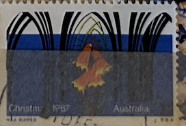
| SOURCE | TITLE| IMAGE MATCH | click to source page |
| Flickr | Christmas 1967, Australia | Paultyb | Flickr | 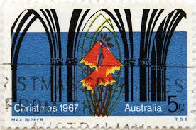 |
| eBay | 2 Australia Error/Variety 1967 4c Christmas Stamps SG 415 Unused - Red Shift | eBay | 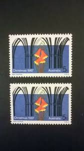 |
| australianstrampcatalogue.com | http://www.australianstrampcatalogue.com | 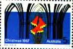 |
| Memory Lane - Growing up in Australia | 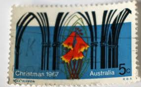 | |
| Todocolección | australia sello usado - 9/43 - Buy Antique stamps of Australia on todocoleccion | 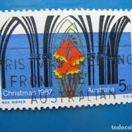 |
| eBay | Stamps: Australia 1973: PO Pack | eBay | 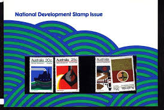 |
| Etsy | Australia Christmas Stamp Set 1950's Through 1960's - Etsy New Zealand | 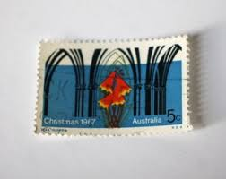 |
| Dreamstime.com | Australian Church Christmas Stock Photos - Free & Royalty-Free Stock Photos from Dreamstime | 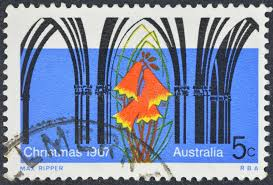 |
| Linns Stamp News | Bells on stamps help ring in the Christmas holiday seaso | 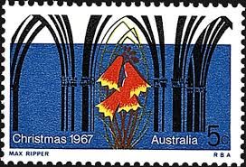 |
| Shutterstock | 2+ Hundred Christmas 1967 Royalty-Free Images, Stock Photos & Pictures | Shutterstock | 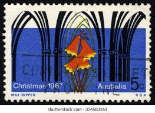 |
| Stamp Community Forum | Arches, Columns & Gates On Stamps - Page 2 - Stamp Community Forum | 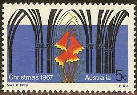 |
| Colnect | Australia : Stamps [Series: Environment Dangers] : Colnect 📮 | 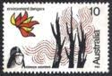 |
| Find Your Stamps Value | Value of commonwealth day 14 march 1983 stamps | 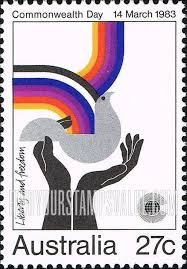 |
| The Garden History Blog | How to avoid Christmas Trees … | The Garden History Blog | 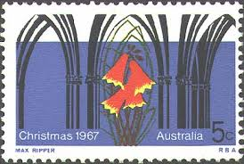 |
| Find Your Stamps Value | Value of christmas 1967 stamps | 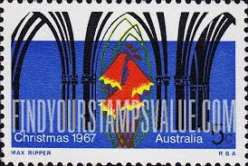 |
| eBay | Australia Stamp Scott 429 Used 5c Gothic Arches & Christmas Bell Flower 1967 | eBay | 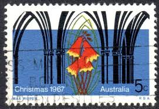 |
| Carter's Price Guide to Antiques | Vintage Western Australia travel and tourism posters - price guide and values | 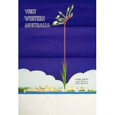 |
| Alamy | AUSTRALIA - CIRCA 1967: a stamp printed in the Australia shows Seated Women Symbolizing Obstetrics and Gynecology Female Symbol circa 1967 Stock Photo - Alamy | 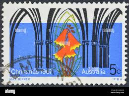 |
| Alamy | Christmas 1967 hi-res stock photography and images - Alamy | 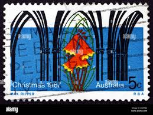 |
| eBay UK | Seasonal, Christmas Australian Decimal Individual Stamps for sale | eBay UK | 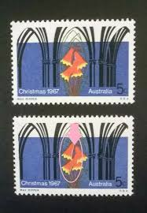 |
| Osta | Austraalia 1989 100 aastat riigiraadiot ** (247101499) - Osta.ee | 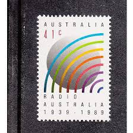 |
| HipStamp | Australia 1967 Sc#429, SG#451 5c Blue Christmas Bells & Arches USED | Australia & Oceania - Australia, General Issue Stamp / HipStamp | 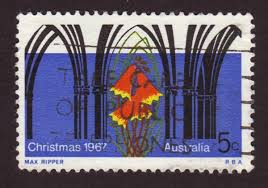 |
| Visit Western Australia Floral Emblem Original Vintage Poster | 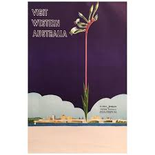 | |
| eBay Australia | Radio Australian Stamps for sale | Shop with Afterpay | eBay Australia | 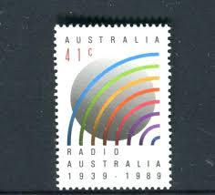 |
| Find Your Stamps Value | Value of 1997 commemorative stamp collection stamps | 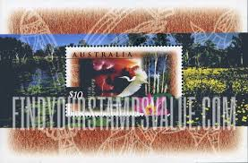 |
| Shutterstock | Australia Circa 1968 Stamp Printed Australia Stock Photo 129996503 | Shutterstock | 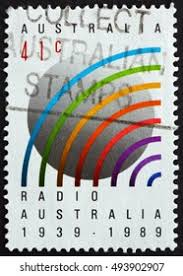 |
| Leski Auctions | Sporting and Historical Memorabilia | |
| eBay | Australia Stamp 1557a - Arts Councils | eBay | 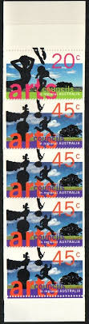 |
| eil.com | Australian Crawl Semantics UK Promo vinyl LP album (LP record) (445962) | 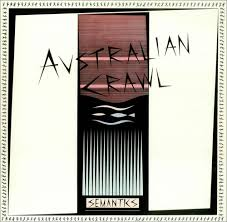 |
| Fine Art America | 1930 Australia Great Barrier Reef Travel Poster Beach Towel by Retro Graphics - Fine Art America | 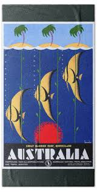 |
| eBay | Australia Scott #597-98, Singles 1974 Complete Set FVF MNH | eBay | 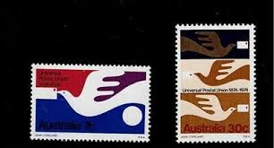 |
| lengscollectables.com | Australia Post Souvenir Covers - Lengs Collectables | 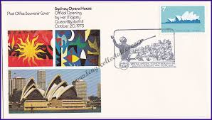 |
| Find Your Stamps Value | Value of australia environment dangers 10 cents stamps | 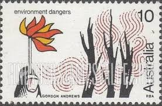 |
| Chinese Stamps. | 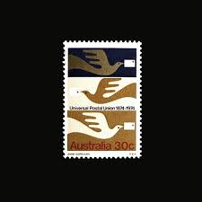 | |
| Downies Collectables | 1973 National Development Blocks of Four Set of 4 (16 stamps) Mint Unh – Downies Collectables | 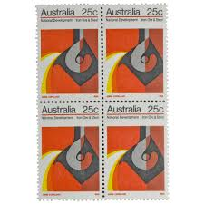 |
| AbeBooks | 0949288098 - Australians, 1888 Australians, a Historical Library - AbeBooks | 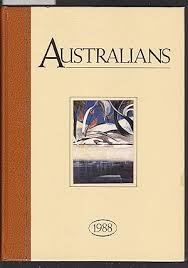 |
| eBay UK | Cultures, Ethnicities Australian First Day Covers for sale | eBay UK | 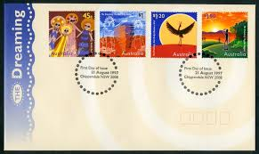 |
| Dreamstime.com | Blandfordia Stock Photos - Free & Royalty-Free Stock Photos from Dreamstime | 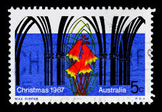 |
| LiveAuctioneers | Australian Tribal Aboriginal Didgeridoo | 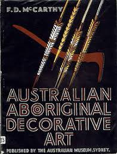 |
| eBay | Australia Scott 605-8 FDC- Environment Dangers | eBay | 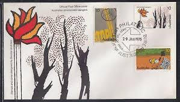 |
| The Digital Philatelist | Australia Philately: Philatelic Bureau Melbourne (3000) – The Digital Philatelist | 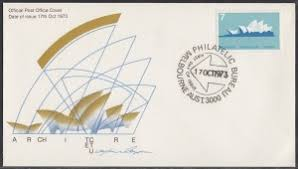 |
| eBay | Australia 1162, MNH. Michel 1180. Radio Australia, 50th Ann. 1989. | eBay | 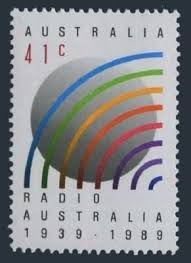 |
| eBay | 1317] Australia, Christmas 1967, Good used, Religion | eBay | 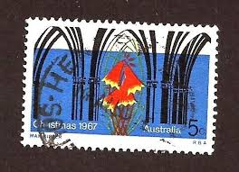 |
| 1stDibs | Visit Western Australia Emblema floreale Poster originale d'epoca in vendita su 1stDibs Italia | |
| eBay | AUSTRALIA 1162 (SG1228) - Radio Australia 50th Anniversary (pf34196) | eBay | 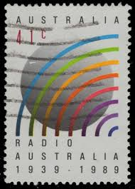 |
| Creative Spirits | Australian stamps celebrating Aboriginal culture - Creative Spirits | 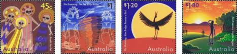 |
| Prospect Stamps and Coins | Stamps - Australian :: Australian First Day Covers :: 1997 - 475 - Dreaming - Australian First Day Cover | 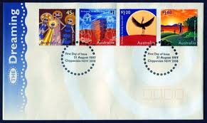 |
| eBay UK | Used Australian Stamp Blocks for sale | eBay UK | 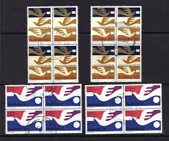 |
| Dreamstime.com | 1,145 Vintage Christmas Australia Stock Photos - Free & Royalty-Free Stock Photos from Dreamstime | 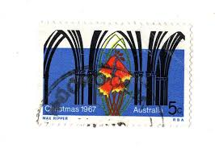 |
| Australia - Travel Poster - art by Perceval Albert Trompf - 1935 | 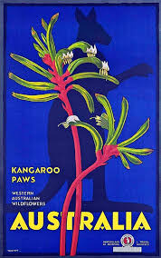 | |
| Chairish | Vintage Mid Century Modern Framed Print, Sunset Gradient With Textured Wheat Silhouettes, Signed Art by Thrasher | Chairish | 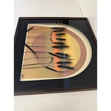 |
| eBay | Music, Musicians Australian Stamp Covers for sale | eBay | |
| PicClick AU | AUSTRALIA OPENING Sydney Opera House 1973 1000 Silver Medal (Ab2522005/316) $350.00 - PicClick AU | |
| Max Stern & Co | Australia 2016 (954) 400 Years of the Landing of Dirk Hartog MUH SG 4628 | |
| Prospect Stamps and Coins | Stamps - Australian :: Australian First Day Covers :: 1973 - 056 - Architecture - Opera - Australian First Day Cover | |
| stamps-plus.com | Stamps Plus | Plants | |
| Academy of the Social Sciences in Australia | Untitled | |
| lengscollectables.com | Australia Post (Official) - No. 001 - 100 - Lengs Collectables | |
| 1stDibs | Original Vintage Travel Advertising Poster Discover Australia Emu Eileen Mayo For Sale at 1stDibs |